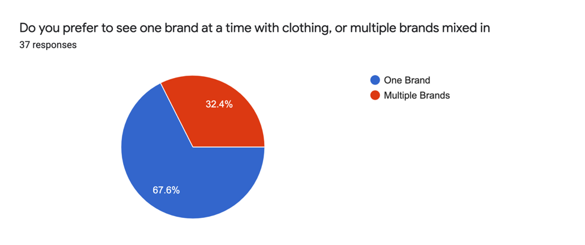
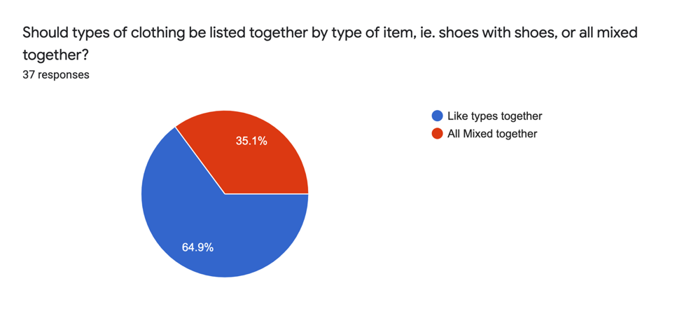
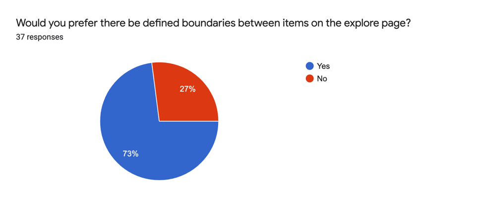
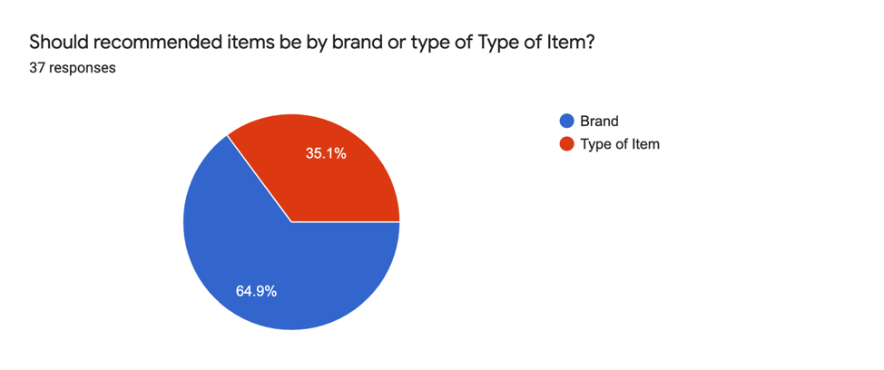
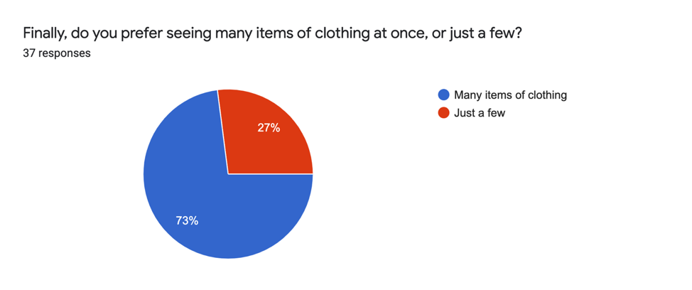
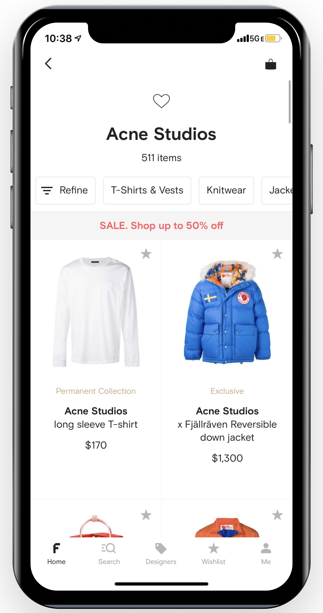
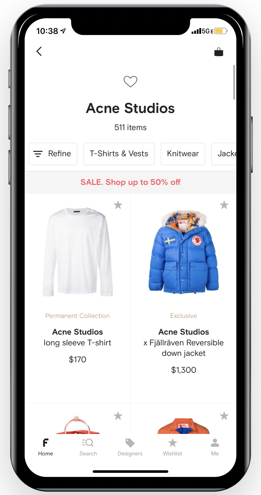
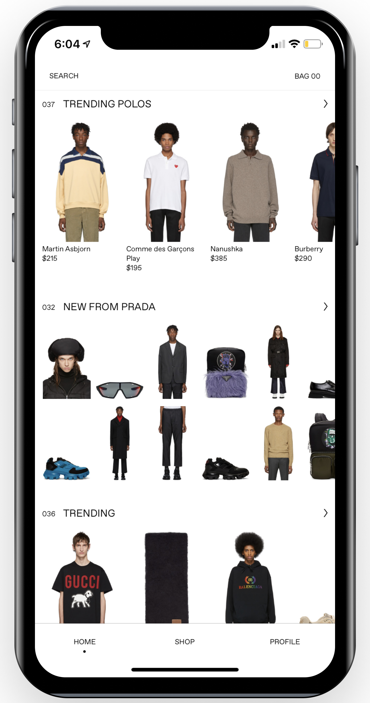
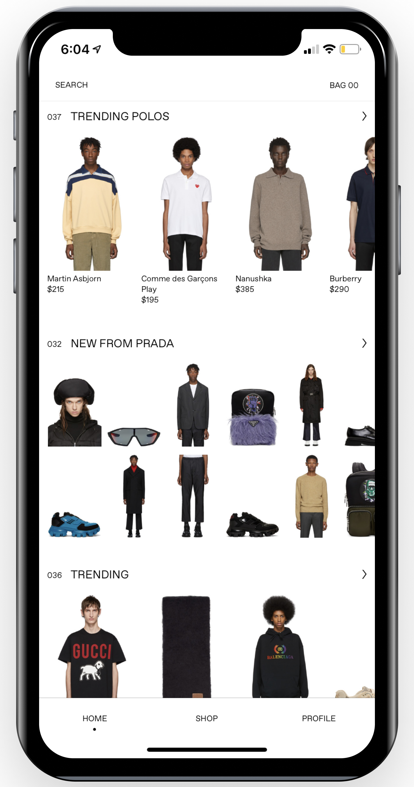

Background
Fashion has always been an integral part of the way I express myself, and the representation of the styles that I choose and the combinations that I present everyday make me unique. When you look good, you feel good, and when you feel good, you have that little bit of extra motivation to get through those grueling days. In this era of technology e-commerce has become necessity for any retailer, yet the usability of their mobile apps often come under scrutiny.
SSENSE is a designer clothing retailer that serves as hub for all kinds of different brands of high-end clothing. The target demographic directly influences the way the information is presented – the users of the app are more concerned with the look of the item they are considering rather than the price, which is why the price is not shown on the browsing “explore” section of the clothing. Yet, through my own personal use, I found that the app’s minimalistic style also made it hard to discern which item was being presented. I often found myself clicking on models which I thought were promoting a shirt, only for the item that was being sold to be a hat.
Although this may be a feature of the marketplace, I found myself wanting more subdivided sections of information – hats to be placed with hats with a logical heading that brings users to where they want.
This sparked some curiosity and I challenged myself to redesign the way that the products are presented to the users, and more specifically the way that the “home” page is laid out to the user.
Quick Preview of Finished Design:

Challenge: Find a pain point in the SSENSE iOS app’s explore page, and find a solution
Role: UX Design, UX Research
Timeline:I am giving myself 2 weeks to accomplish this to emulate an industry setting
Planning
As always, I want to create some form of plan to follow, to guide my design process.

UX RESEARCH
To get a general sense of the preferences of customers who use the app, I wanted to conduct some user surveys. I distributed the surveys through social media, so it is important to note that the bias involved with surveying people that are directly associated to me, in that they will likely be 16-20-year old’s in America and the Netherlands. For the purpose of this product, it actually helps, as this is SSENSE’s target audience.
The main points of preference that I wanted to learn about was how the clothing should be arranged and presented to the customer. There should be a clear flow of information from brand to individual item and knowing how customers prefer it to be ordered and grouped can influence the decision.
The results of the user surveys conducted are below.
This question aims to see how users want the brands sorted, whether they prefer to see one brand grouped under a common sub header, or all the brands mixed together under other common shared characteristics. The overwhelming majority was that they preferred one brand at a time, this is important as SSENSE is for designer, and therefore high-priced clothes.
I was curious in finding out how users wanted types of items, i.e. shoes, to be grouped. Did they want all the shoes to appear together or simply with other types of clothes, which is what SSENSE uses right now. Most users wanted “like” items to be grouped together, which would make it easier to associate what item is being presented, which is especially useful with items with no caption.
This was one of my early observations of the product – it shows many items for sale at once, all clustered on a white plane. I often found myself clicking on what I thought was an item, only to be directed to a page that was for the item on the right of the product I wanted. Most users agreed with me here in that they need defined boundaries.
Most users wanted items to be grouped by the brand, rather than the type of item, so that all of Gucci’s products are grouped together, rather than shoes with other brands of shoes.
 Most people wanted to see many items at once, which follows the “hunt and peck” mental model of many e-commerce sites, this allows users to show intertest through a click, without making them commit to a lot of information in the initial if they are not interested. This lets users span a lot of information without overloading them.
Comparing to Other Designer Clothing Companies
To gain a sense of what competitors are doing in terms of how they group their products I turned to three competitors in high-end clothing, Nordstrom, Saks 5th Avenue, and Farfetch. They are all addressing the same market, and thus the usability of the product can be essential in creating relative advantage.
Nordstrom:
The 3 screenshots above show Nordstrom’s home explore page. As seen in the second screenshot, there is no association between items, with a robe, a shoe, a hoodie and jacket all pictured together.
There is no distinction between items, with no clear-cut borders, but the margins use the negative space to have borders.
Nordstrom has a sort, and filter feature that makes it easier to see the difference between items, and the relatively large size of the images and information makes it easy to distinguish between items. This is in contrast to the SSENSE UI, in which many more items are being presented at once.
Saks 5th Avenue:
Farfetch:
 


Farfetch is the most direct competitor as a B2C company like SSENSE that targets a similar younger demographic than Nordstrom and Saks. This is reflected in its UI, which has much less information, and requires the user to figure out more. An Interesting thing to note is the home page, which is shown by the left 2 screenshots, and how they use a carousel to show many different types of styles without giving up too much space. It also uses small grey boxes to indicate the difference between items, something that the users wanted. As with all the other applications, and something that is necessary in a product with a lot of items, there is a sort feature.
Identify Pain Points:
So, from the user research, and from the competitors I was able to get an idea of how these items of clothing should be presented to the customer. Most consumers want clothing to be presented by brand, and then divided by the type of item. This would allow them to make the mental connection that these are like items.
So now going to the SSENSE UI, we can look at the main problems – Like items need to be grouped together, boundaries between items need to exist, and also a way to display many items without making the items too small, and therefore inaccessible.
 

As seen in the screenshots above, the middle items are hard to see and determine what is being bought. This can directly influence the likelihood of a user purchasing an item, which the e-commerce site wants to prevent
UX DESIGN
Brain storm Ideas:
To begin, I want to structure my ideas in how the information should flow by creating a simple mind map. This mind map can influence how the low fidelity sketches should be structured by.

With this now into mind, I can summarize my ideas. The home page of this app should detail key things – new items to the market, trending items, season specific items that are promoted and recommended items based on user data. The way that these subsets should be presented is using headers with a heavier font weight, and for specific item wheels, such as the trending items, I can use a carousel that would allow a lot of items to be displayed without taking up that much space.
Low Fidelity Sketches:
To guide my thinking I created some low fidelity sketches of what the new explore page would look like.


The first picture shows what the final product should look like, and the 2nd picture expands on some key features of the interactions. The items are presented in a carousel that is grouped under subsects that I determined before – New items, trending, recommended and items based on time of year.
The bottom 2 sketches show what happens when the user interacts with an item, on a uncomplete click, or a hover, the item will darken, and give some quick information such as brand, product name and price. Upon full click the product page will trigger.
I also added a filter bar in line with the competitors, to make it quicker to filter through a lot of material.
Final Prototypes:
The final prototypes were created in Figma and reflect the design decisions made in the sketches.
For typography, I used the Inter font to keep in line with SSENSE’s branding, and a neutral white, black and grey color scheme.
Here is the before and after of the home page of the explore page:
Note the defined product spaces, SSENSE branding, and new sorting bar. This allows users to find what they want quicker than before.
Addition of Hover Element:

The hover element allows users to quickly see the prices and description for an item without having to commit to a full quick. This works in conjunction with the “hunt and peck” mental model that states that people are simply scrolling and do not want to have to make multiple clicks in choosing a product and clicking “back”.
Before and After of Product Page:

Since the hover touch gives users the basic information that is encapsulated in the old product page, I used the full click product page to give all the information that is given for the product. The user has already expressed their full interest by not only committing to a hover, but also a full click, so it is fair to give them all information.
To showcase the new sort/filter bar, I created some prototypes showing the 4 states.


The 4 prototypes above show the 4 states of the filter and sort bar, and what is presented next.
Final Thoughts:
This little challenge proved to be really helpful in developing my skills in terms of quick thinking, gathering research and prototyping. Although user preference cannot be encapsulated by the 37 responses I got through my surveys, I can only attempt to expand on what was given to me.
In a real project, this would then be handed off to a front end dev, but given as this is spec work, I will not be continuing any further.
Deliverables:New Explore page, filter and sort bar, hover touch, product page